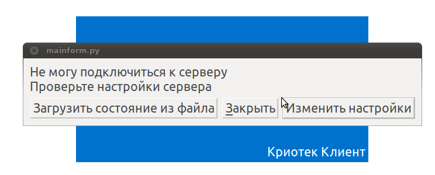
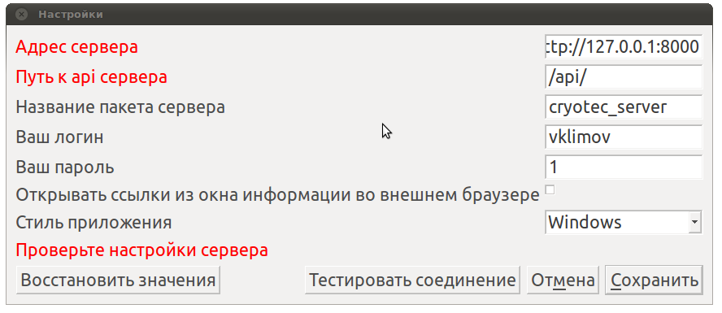
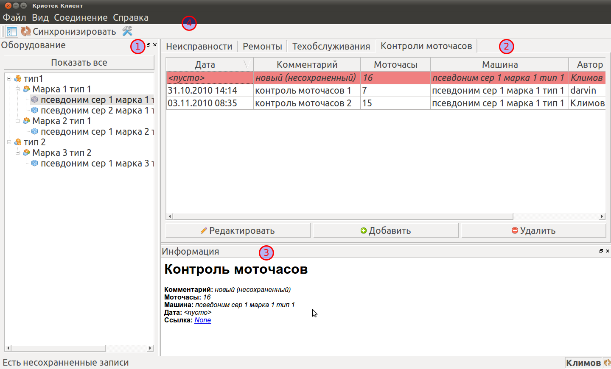

Краткое руководство
Программа "Криотек Клиент" предназначена для внесения событий (ремонтов, техобслуживаний, считываний моточасов и сообщений о неисправностях) инженерами компании удаленно от сервера компании или сети компании, а также для просмотра журнала событий.
Кроме того, реализована возможность работы в условиях полной недоступности сети - так, для полноценной работы сотрудника с журналом на объекте ему необходим лишь ноутбук. При этом, ему будет доступна вся информация, внесенная в журнал им и другими сотрудниками на момент последней синхронизации его копии программы с сервером. Внесенная им информация в режиме недоступности сети также будет сохранена в общем журнале, как только сотрудник подключится к серверу и произведет синхронизацию
При первом запуске программы необходимо внести информацию о сервере, где запущена серверная часть системы:


После загрузки информации отобразится главное окно программы:

Компоненты главного окна:
- Дерево оборудования - список всего оборудования, обслуживаемого журналом. Структуирован по маркам, типам оборудования, клиентам. При выборе узла дерева (типа, марки или единицы оборудования) производится фильтрация таблицы событий (отображаются только те события, которые относятся к выбранному типу, марке или единицы оборудования). При нажатии кнопки "Показать все" фильтрация сбрасывается - показываются все события. Добавлять новые события можно только если в дереве оборудования выбранна конкретная единица оборудования.
- Таблица событий отображает события. Для перехода к неисправностям, техобслуживаниям, ремонтам или считываниям моточасов необходимо щелкнуть по соответствующей вкладке. Снизу таблицы событий есть три кнопки: добавить, удалить и редактировать. Все они относятся к текущей вкладке. Кнопки "удалить" и "редактировать" работают только для локальных (добавленных пользователем и несинхронизированных с сервером) событий.
- Панель информации отображает подробные сведения для выбранного объекта (включая типы, марки, единицы оборудования, события, пользователя). Для вывода информации об объекте достаточно щелкнуть по нему в дереве оборудования или в таблице событий. Также, в панели информации отображается URL ссылка для редактирования объекта в интерфейсе административной панели (при щелчке открывается в браузере)
- Меню и панель инструментов предоставляют доступ к таким функциям, как справка, изменение настроек, синхронизация с сервером и сохранение/загрузка состояния программы в локальный файл